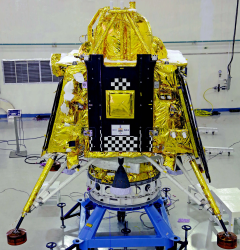

CHANDRAYAAN-3
Chandrayaan-3 is third and most recent lunar Indian Space Research exploration mission under Chandrayaan programme. It consists of a lander named Vikram and a rover named Pragyan similar to Chandrayaan-2, but does not have an orbiter. Its propulsion module behaves like a communication relay satellite.

OBJECTIVES
- Getting a lander to land safely and softly on the surface of the Moon.
- Observing and demonstrating the rover's loitering capabilities on the Moon
MISSION SEQUENCE
Phase-1: Earth Centric Phase
- Pre-launch Phase
- Launch and Ascent Phase
- Earth-bound Manoeuvre Phase
Phase-2: Lunar Transfer Phase
- Transfer Trajectory Phase
Moon Centric Phase
- Lunar Orbit Insertion Phase (LOI)-(Phase-3)
- Moon-bound Manoeuvre Phase (Phase-4)
- PM and Lunar Module Separation (Phase-5)
- De-boost Phase (Phase-6)
- Pre-landing Phase (Phase-7)
- Landing Phase (Phase-8)
- Normal Phase for Lander and Rover (Phase-9)
- Moon Centric Normal Orbit Phase
(100 km circular orbit) - For Propulsion Module (Phase-10)